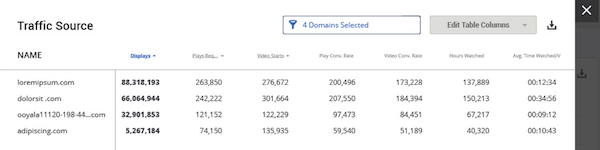
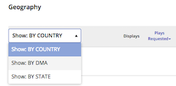
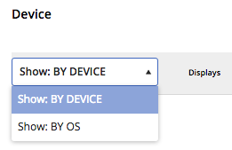

Use the double-arrow icon see your data in table layout.
If you want to see dimension data in table view, click the expand icon () in the
upper right corner of any dimension panel on the Business
Intelligence page.

With the displayed table, you can:
- Use the page options on the bottom of the table to look through different pages of the
data.
- Add or remove table columns. By default, all metrics are visible in the table.
- Click Edit Table Columns.
- To remove metric columns from the table, deselect the checkbox next to the metrics
you want to hide. Only selected metrics will be shown as columns in the table.
- To add metric columns to the table, select the checkbox next to the metrics you want
to show.
- To export to CSV format, click Export to CSV. The exported
table can contain up to 1,000 items.
- Adjust column width by dragging column borders.
- Adjust data order by clicking on column titles (for example, you can have data arranged
in ascending or descending order).
- Use the Show By menus for the Geography and Device panels to
select which data categorization to export.
- For the Geography panel, select Show: BY COUNTRY, Show: BY DMA or Show: BY
STATE.

- For the Device panel, select Show: BY DEVICE or Show: BY OS.
